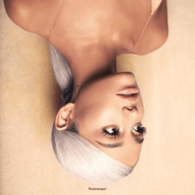
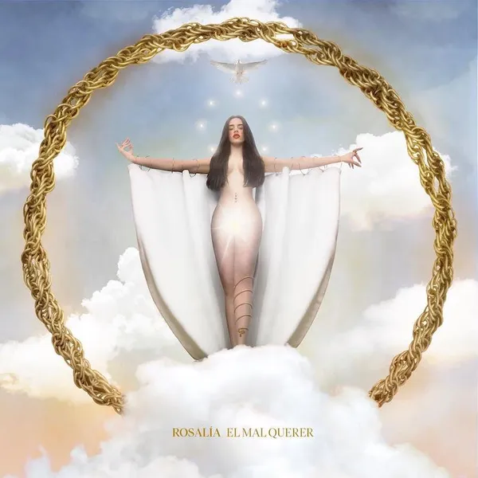

Album Reviews

Sweetener,
Ariana Grande
Sweetener was the first album in her second era (Sweetener,
Thank u Next, and Positions) and it was a great experience
for me. This album is what rebranded herself from her modern
pop era to her R&B flavor she is now known for. Personally,
I loved this album. There were a few parts of the album that
made it less cohesive, like having No Tears Left to Cry and
Successful very close to each other in the lineup. The cohesion
makes it a bit harder to listen to because of the different, hard to
follow, vibes. Even though not very cohesive, there are some of my
favorite songs Grande has ever put out. This album was produced with the
help of Pharell, and this is one of my favorite projects he has worked on.
Overall, a good/great album. 7.5/10

Ctrl,
SZA
Ctrl has been an all-time favorite for me. This album tells a
story of trust in others, self discovery, reflection on past
experiences, and hope for a better future. The production of
this album is very good, and adding in artists like Kendrick
Lamar and James Fauntleroy as support just creates a more
diverse sound. This album has great cohesion, with every song
and transition feeling just right, as if each song was
carefully made and placed. If I could make any changes to
this album, I probably wouldn't out of fear of lessening
this masterpiece. This is a beautiful, no skip album, and
it is a regular listen for me. Near perfect, 9.5/10

Igor,
Tyler, the Creator
An album which showcases many aspects of love. This album is
Tyler, the Creator's fifth studio album, which he produced
himself with the help of others. This is personally my
favorite album from Tyler because of the sound and storytelling
. This album also features many other great artists like Solange Knowles, who both are great additions to this album.
Personal favorites are A BOY IS A GUN, I THINK, and NEW MAGIC
WAND. These electrifying tracks all have great storytelling,
great production, and somehow all fit really well in this album.
I think the key to an album that flows well is making sure songs
complement each other, which these all do very well. Again, this
is another album I would not change, and I recommend everyone to
listen to it. Perfect, 10/10.

El Mal Querer,
Rosalia
El Mal Querer is Rosalia's second studio album, and she
delivered a great performance. This album shows her transition
from a traditional flamenco singer to having a greater range.
This is a mix of flamenco with heavy influences from Caribbean,
Latin American, and African American music. This is personally
my favorite album from Rosalia, and this was an era where her
music depended on her voice greatly. Which, I believe is a good
thing because her voice is strong and always is the centerpiece
of her songs. This album is very cohesive, talking about love
and losses, among other themes. This is a very passionate album,
and I recommend anyone to listen to it. Great album, 8/10.